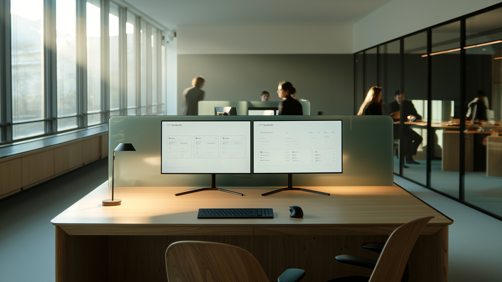

Vertriebsautomatisierung für KMU Schweiz: So gelingt der Start

Ein KMU-Inhaber aus dem Aargau hat es letztes Jahr so formuliert: "Wir haben 400 Kontakte im CRM und keiner weiss, wann wer zuletzt angeschrieben wurde." Das ist kein Einzelfall. In den meisten Schweizer KMU liegt der Vertrieb auf den Schultern von zwei, drei Personen, die zwischen Kundengesprächen, Offerten und Administration hin- und herspringen. Für systematischen Outreach bleibt schlicht keine Zeit.
Genau da setzt Vertriebsautomatisierung an. Nicht als Ersatz für den persönlichen Kontakt, sondern als Motor, der im Hintergrund läuft, während dein Team sich auf Abschlüsse konzentriert.
Warum klassischer Vertrieb in Schweizer KMU an Grenzen stösst
Die Zahlen sprechen für sich: 78 Prozent der Käufer entscheiden sich für den Anbieter, der als Erster antwortet. Wenn deine Reaktionszeit bei 40 Stunden oder mehr liegt, hast du das Rennen oft schon verloren, bevor es begonnen hat.
Dazu kommt das Problem des CRM-Friedhofs. Kontakte werden erfasst, einmal angeschrieben und dann vergessen. Nach sechs Monaten weiss niemand mehr, wer eigentlich Interesse gezeigt hat. Manuelle Nachfassaktionen über LinkedIn oder E-Mail fressen Stunden, die anderswo fehlen.
Viele KMU lösen das Problem, indem sie eine Agentur engagieren. Das kostet dann schnell 5000 CHF im Monat und mehr, oft ohne dass man wirklich Einblick hat, was im Hintergrund passiert oder wie die Ansprache konkret aussieht.
Was Vertriebsautomatisierung für KMU konkret bedeutet
Vertriebsautomatisierung heisst nicht, dass eine Maschine wahllos E-Mails verschickt. Es geht darum, die immer gleichen Schritte im Vertriebsprozess zu systematisieren: Recherche der richtigen Ansprechpartner, personalisierte Erstkontakte, Nachfassen zum richtigen Zeitpunkt, Qualifizierung von Interessenten.
Ein konkretes Beispiel: Ein Treuhandunternehmen mit 15 Mitarbeitenden in Zürich wollte neue KMU-Kunden gewinnen. Statt dass die Geschäftsleitung selbst LinkedIn durchforstet, läuft die Ansprache jetzt automatisiert, 24 Stunden am Tag, sieben Tage die Woche. Antwortet ein Interessent, landet die Konversation direkt im Postfach der zuständigen Person. Die KI übernimmt die Vorarbeit, der Mensch das Gespräch.
Das ist der Kern: Die Maschine macht die Fleissarbeit, dein Team macht den Abschluss.
Die typischen Stolpersteine bei der Einführung
Viele KMU scheuen sich vor Automatisierung, weil sie IT-Aufwand und lange Implementierungszeiten fürchten. Das ist berechtigt, wenn man an klassische CRM-Projekte denkt, die sich über Monate hinziehen und am Ende doch niemand richtig nutzt.
Bei einer Done-for-you-Lösung entfällt dieses Risiko grösstenteils. Kein internes IT-Projekt, keine wochenlange Schulung. Die Plattform wird eingerichtet, die Zielgruppe definiert, die Ansprache abgestimmt, und dann läuft das System. Aktiv in 3 bis 4 Wochen ist realistisch, wenn die Grundlagen wie Zielgruppenklarheit und Angebotsdefinition schon stehen.
Ein weiterer Stolperstein ist die fehlende Schweizer Marktkenntnis. Vertrieb in der Schweiz funktioniert anders als in Deutschland oder den USA. Die Ansprache ist zurückhaltender, das Vertrauen muss erst aufgebaut werden, Referenzen aus der Region zählen mehr als globale Case Studies. Eine Automatisierungslösung, die mit generischen US-Templates arbeitet, wird bei Schweizer Entscheidern kaum ankommen.
Was ein gutes System für Schweizer KMU können muss
Erstens: Es muss die Sprache und den Ton der Schweizer Geschäftswelt treffen. Direkt, aber nicht aufdringlich. Sachlich, aber persönlich.
Zweitens: Datenschutz ist kein Nebenthema. Wer mit Kontaktdaten arbeitet, muss DSGVO-konform und nach Schweizer Datenschutzrecht vorgehen. Das betrifft die Datenspeicherung genauso wie die Art der Ansprache.
Drittens: Reaktionsgeschwindigkeit. Ein System, das erst nach zwei Tagen auf eine Antwort reagiert, verschenkt genau den Vorteil, den es bringen sollte. Antwortet ein Interessent um 22 Uhr, sollte die nächste Interaktion nicht erst am übernächsten Tag folgen.
Viertens: Die Möglichkeit, jederzeit einzugreifen. Automatisierung heisst nicht Kontrollverlust. Ein KMU-Inhaber will wissen, was in seinem Namen kommuniziert wird, und die Freiheit haben, Anpassungen vorzunehmen.
Der Business Case: Was sich für ein KMU wirklich ändert
Rechnen wir kurz: Ein Vertriebsmitarbeiter, der pro Woche 15 Stunden mit manuellem Outreach verbringt, kostet bei einem Jahresgehalt von 90'000 CHF ungefähr 26 CHF pro Stunde, also rund 390 CHF wöchentlich nur für diese Tätigkeit. Über ein Jahr sind das gut 20'000 CHF, die in Recherche und Nachfassaktionen fliessen, nicht in Kundengespräche.
Mit einer automatisierten Lösung verschiebt sich diese Zeit. Der Mitarbeiter führt weiterhin die entscheidenden Gespräche, aber die Vorarbeit läuft im Hintergrund. Das CRM bleibt aktiv, weil jeder Kontakt automatisch nachverfolgt wird. Und weil die Reaktionszeit sinkt, steigt die Wahrscheinlichkeit, dass genau die 78 Prozent der Käufer, die beim Ersten kaufen, bei dir landen und nicht bei der Konkurrenz.
So gehst du den Einstieg an
Starte nicht mit der grössten Zielgruppe, sondern mit der klarsten. Wer sind die zehn Unternehmenstypen, die am ehesten von deinem Angebot profitieren? Je genauer diese Definition, desto besser funktioniert die automatisierte Ansprache.
Definiere, was danach passiert. Automatisierung bringt Gespräche, keine unterschriebenen Verträge. Wer übernimmt die Qualifizierung, wer führt das Erstgespräch? Das muss von Anfang an klar sein, sonst verpuffen die gewonnenen Interessenten wieder im internen Leerlauf.
Und: Gib dem System Zeit. Die ersten Wochen sind Testphase. Nach vier bis sechs Wochen zeigt sich, welche Ansprache funktioniert und welche Zielgruppe am besten reagiert. Das ist normal und Teil des Prozesses, nicht ein Zeichen, dass etwas nicht funktioniert.
Fazit
Vertriebsautomatisierung ist für Schweizer KMU längst kein Zukunftsthema mehr, sondern eine Frage der Wettbewerbsfähigkeit. Wer heute noch 40 Stunden braucht, um auf eine Anfrage zu reagieren, verliert Geschäft an Anbieter, die schneller sind.
Bei Salesbrain kombinieren wir 20 Jahre Schweizer Vertriebserfahrung mit einer KI-Plattform, die rund um die Uhr für dich arbeitet. Kein IT-Aufwand, kein monatelanges Projekt, sondern ein System, das in 3 bis 4 Wochen aktiv ist. Wenn du wissen willst, wie das für dein Unternehmen konkret aussehen könnte, lass uns reden.
← Zurueck zum Blog